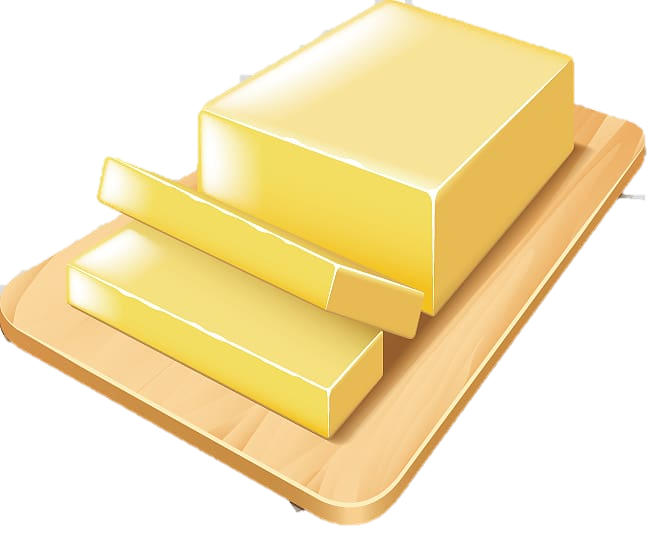

- 1 Lechera
- 1 cucharada de Azucar
- 1 taza de leche tibia
- 500 gr de harina
- 1 huevo
- 1 cucharada de vainilla
- 1/2 cucharadita de sal

- 8 gr de levadura
- 1/2 barra de mantequilla

PREPARACION
Mezclar en un recipiente ondo la leche tibia con los 8 gr de levadura, azucar y una cucharada de la harina ya pesada. Se deja reposar de 10 a 15 minutos
En una superficie plana y limpia mezlcar todos los ingredientes incluyendo la leche anterior con levadura, puede agregar harina extra por si se pega la masa
Ponerla en otro molde engrasado con aceite o mantequilla en spray y untarle aceite a la masa. Se deja reposar una hora en algun lugar caliente o calido
Al pasar la hora, extender la masa en la superficie plana con harina debajo para que no se pegue, amasar y cortar en circulos medianos.Finalmente se calientan en un comal de 5 a 6 minutos por lado.